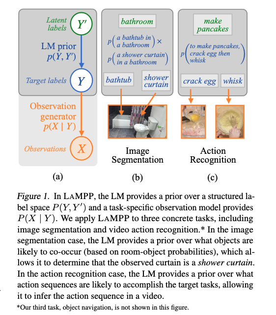
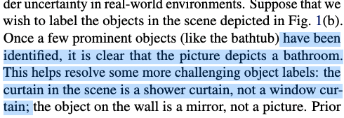
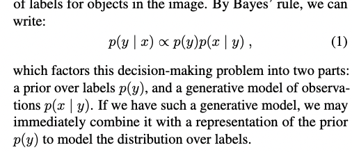
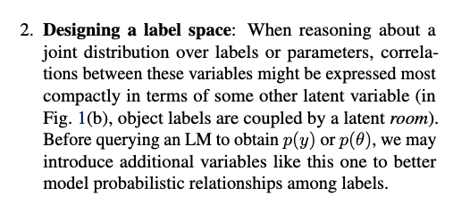
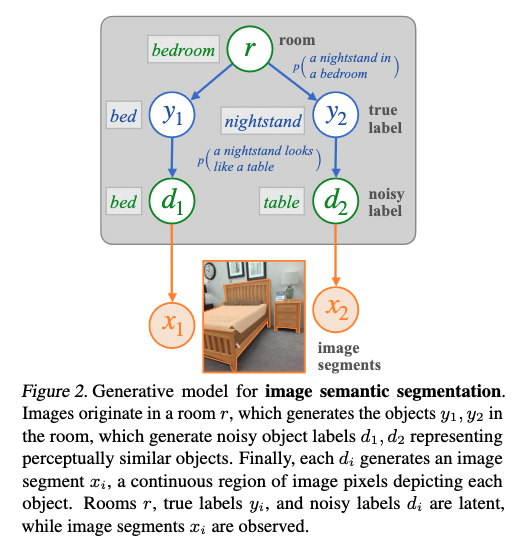
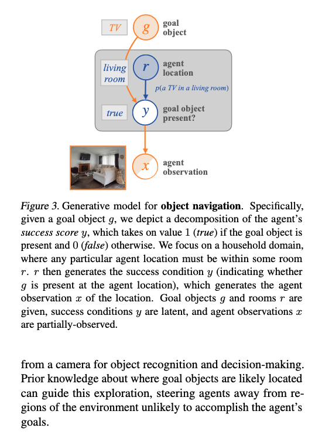
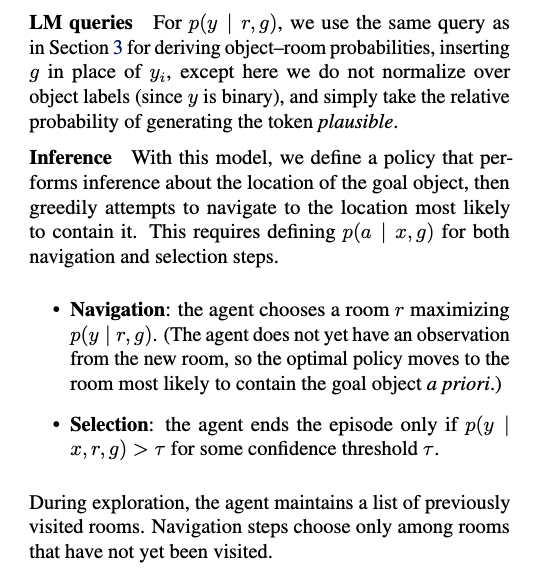
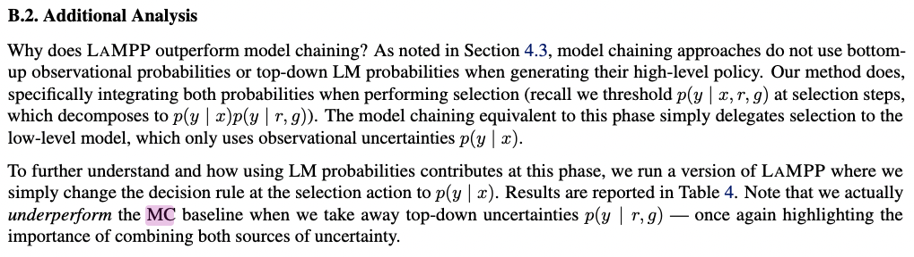

[TOC]
- Title: LAMMP Language Models as Probabilistic Priors for Perception and Action 2023
- Author: Belinda Z. Li, Jacob Andreas et. al.
- Publish Year: 3 Feb 2023
- Review Date: Fri, Feb 10, 2023
- url: https://arxiv.org/pdf/2302.02801.pdf
Summary of paper

Motivation
- Language models trained on large text corpora encode rich distributional information about real-world environments and action sequences.
- this information plays a crucial role
Contribution
- we describe how to leverage language models for non-linguistic perception and control tasks
- Our approach casts labelling and decision-making as inference in probabilistic graphical models in which language models parameterize prior distributions over labels, decisions and parameters, making it possible to integrate uncertain observations and incomplete background knowledge in a principled way.
Some key terms
common-sense priors
- are crucial for decision-making under uncertainty in real-world environment

- prior knowledge about object or event co-occurrences
- unlike segmented images or robot demonstrations, large text corpora are readily available and describe almost all facets of human experiences.
model chaining approach
- encode the output of perceptual system as natural language strings that prompt LMs to directly generate labels or plan
- Sukai Comment: this is not a very good way due to information loss
Method
- we can combine them with domain specific generative models or likelihood functions to integrate “top-down” background knowledge with “bottom-up” task-specific predictors.
- by Bayes rules

- the $p(x|y)$ is a generative model of observations given labels
design a label space
- this means we can have a meta label for labels


- noisy label is from from the image model (the segmentation classes from the image model)
navigation task using LM to calculate prior


Core improvement compared to Previous Work
